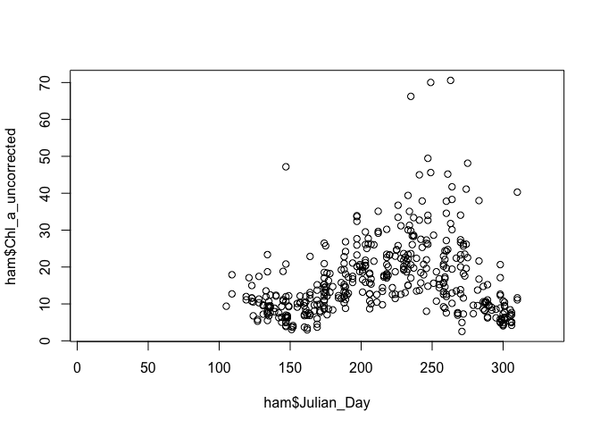
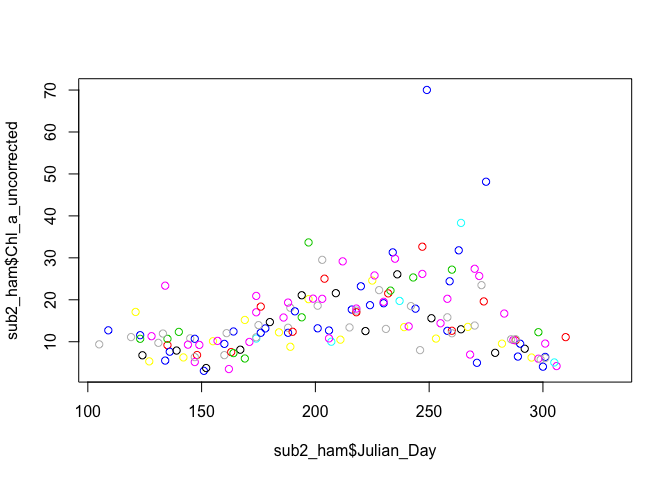
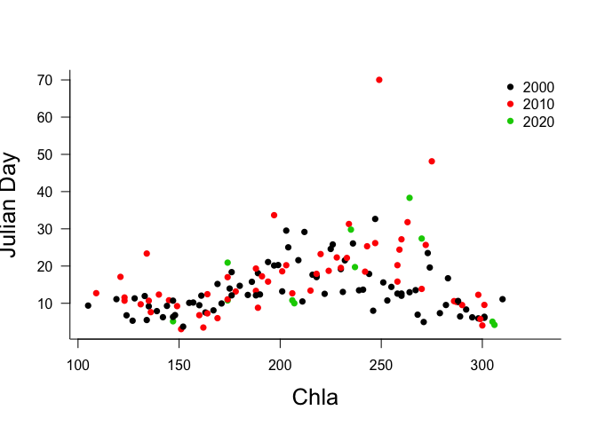
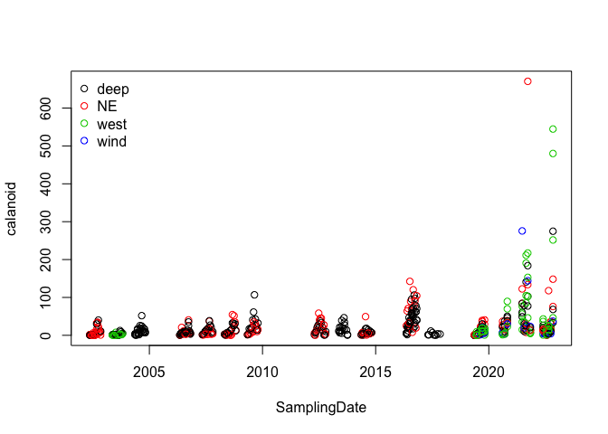
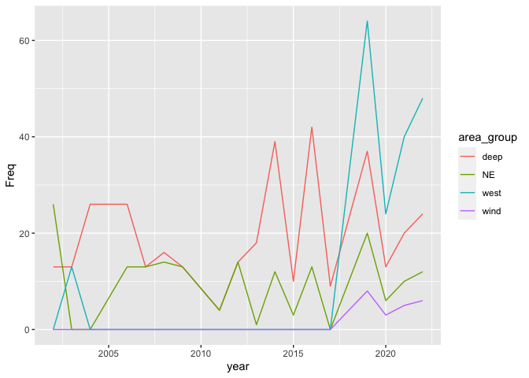

- Basic introduction to R
- Linear regression
- Multi-variate Linear
Regression
- 0. Objectives
- Introduction (REMOVE MANUAL NUMBERING)
- 1.1 What is Multivariate Linear Regression Model
- 1.2 Recipe for multi-variate model in R
- 1.3 Loading data
- 2. Data preparation
- 3. Model building
- 4. Model output
- 4.1 Model assumptions
- 4.2 Evaluate model assumptions
- 4.3 Output interpretation
- 5. What could go wrong?
- References and Resources
- Logistic
regression
- Objectives
- What is a logistic regression?
- How are logistic regressions different from linear regressions?
- What does the logistic curve mean?
- Mathematical representation
- What kind of predictors can we have in a logistic regression?
- Key binomial logistic model assumptions
- Aquatic ecology studies using logistic regression
- Practice time: run your own logistic model
- Evaluating the accuracy of logistic models
- What could go wrong?
- R resources
- Multivariate analysis”
- Get co-ordinates of variables (loadings), and multiply by 10
- Draw arrows
- Label position
- Add the species variables
Basic introduction to R
Get ready for the workshop
This is an introduction to basic stats in R with a focus on regression. We will assume a familiarity with R to the extent of the participant having tried to do something with the programming environment in the past (e.g., a t-test), but no more than this.
R from zero warmup
If you have never used R in any way at a all, it may be helpful to take a quick look at this interactive tutorial for undergraduates at the University of Waterloo. Just complete the tutorial entirely online rather than downloading, starting from “R as a calculator”.
https://shiny.math.uwaterloo.ca/biology/QBshiny/IntroR/
Then, when you are ready, get some help installing R on your laptop. You will need R installed to participate in workshop.
Download needed files and packages
We will be using a flat .xlsx file of Hamilton Harbour data for our workshop exercise today. Our first job at the workshop will be to import that data.
Please download the .xlxs to your personal computer prior to the workshop.
In addition, we encourage you to download and install the packages we will be using for the workshop.
Package to read .xlsx files
R is an open source platform, which means that anyone can contribute code for everyone to use. There are thousands of functions in R written by scientists, statisticians and mathematicians all over the world. Sometimes a group of functions related to a particular task are grouped together in what is called a “library” or “package”. We are going to use one such library that has been created to import .xlsx files, “readxl”.
On your own computer, you will need download the package and install it. This is pretty easy. On the RStudio menu select ‘Tools’, and then ‘Install packages’ from the drop down list. Enter ‘readxl’ in the search window, and then select ‘Install’. You can also use the function install.packages. Just type install.packages(“readxl”).
install.packages("readxl")The function install.package downloads the indicated package from the internet and stores it. Eventually, in the console window you should see an indication the R has downloaded and installed the package.
Once you’ve done this once, you don’t need to do it ever again, unless you update the version of R you are using, or wish to use an updated version of the package.
In addition, the exercise on multivariate analysis will use the “vegan”. Please install this package prior to the workshop as well.s
Thee package are now part of R’s set of functions, but since it they not part of the standard environment, you will have to mention to R when you wish to use functions from this collection. The library() function tells R you wish to use commands from a particular package on this occasion.
Every time you restart R, or try to compile a .Rmd file, you will have to mention to R when you wish to use functions from this collection. The simplest method to do this is to always include the statement ‘library(readxl)’ at the beginning of code that uses functions from this package.
Here R loads the package into active memory.
library(readxl)If this command works, you are ready to go for the first part of the workshop!
Workshop activities
Data import & packages
Our first job today is to use a package to import the data we will be using throughout the workshop.
If you have sucessfully installed the library readxl, we can use it to read in the .xlsx file. The function we need is read_excel(). In general, I advise users to examine the help functions in R every time they use a new function. If you type ‘?read_xlsx’ in the console window, a help window will be called.
The help file indicates the inputs that the function takes. We see that we need the path to the .xlsx file, the sheet of that file we want to read. Note that if we do not specifiy which sheet, the function will default to reading the first sheet. Most functions in R will have default settings for the inputs so that you do not necessarily have to set these. For example, to read in you Hamilton Harbour data, we are not going to using the range inpput that selects a cell range to read in.
Where’s my file??
To use this import function we need the path where the file is located. There are at least three ways to find and import a file in R:
If you don’t know where you have saved a file (the path) you can combine the file.choose() function to get a drop down menu of your computers file system. If you enter ‘read_excel(file.choose())’, you can then use the menu which appears to choose the appropriate file. For example, to import the data and save it to the variable name ‘ham’, enter the command ‘ham = read_excel(file.choose())’ in the Console window.
Alternately, if you know the location of your file, you can enter a command like ‘ham = read_excel(“/Users/Kim/Documents/hamiltonharbour.xlsx”)’ to open the file immediately.
You could also simply change the directory that R is looking at. The command getwd() allows you to see which directory R is currently focusing on, and the command ‘setwd(“C:/Users yourusername/workshop”)’ or similar should change the directory to the location you want to save to. You can check by typing getwd() again. Then you could simply enter “read_excel(”ind dates flat all parameters Hamilton only FOR Kim.xlsx”), since R would already be focusing on the correct directory
# load the library
library(readxl)
# import the xlsx file
ham <- read_excel("ind dates flat all parameters Hamilton only FOR Kim.xlsx")Did the import work??
Once you have read in the data, it is critically import to check that th import worked properly. Problems that can arise from incorrectly formatted files can then be resolved. Problems can include: numierc data being read in as character data, column names being read in as the the first row of data, missing values being coded as something other than NA.
Methods to examine the imported data:
- The easiest method is of course just to print the data. You can just type ‘ham’ in the Console window. However, most datasets will be too large for this approach to be useful (the top of the data will scroll right off the page). The view() function brings up a flat file view of the data which can be easier to use, but it is still pretty unwieldly for a dataset this size.
In that case, there are a number of commands to look at a portion of the dataset.
- The function colnames(mydata) will show you the all
the column headings.
- The functions head(mydata) and tail() will show the first or last rows of the data.
- The command str(mydata). gives a whole bunch of information about your dataset including: the number of observations, the number of columns, the names of the different columns, the number of different string values in each text column (e.g., 7 levels for days of the week), the kind of values in the numeric columns (e.g., “int” for integer values). You should be pretty confident that your data was imported into R correctly after looking at all this.
Try it now: Use colnames() to see the names of the columns in ham, tail() to see the last rows of ham, and str() to see information about data type etc.
#View(ham)
colnames(ham[,1:10])## [1] "waterbody" "area_group" "Latitude" "Longtitude"
## [5] "Station_Acronym" "report_Stn" "SamplingDate" "season"
## [9] "year" "Julian_Day"tail(ham, n=10)## # A tibble: 10 × 109
## waterbody area_group Latitude Longtitude Station_Acronym report_Stn
## <chr> <chr> <dbl> <dbl> <chr> <chr>
## 1 Hamilton Harbour west 43.3 -79.9 HH9031 9031
## 2 Hamilton Harbour deep 43.3 -79.8 HH9033 9033
## 3 Hamilton Harbour west 43.3 -79.9 HH1B 1B
## 4 Hamilton Harbour west 43.3 -79.9 HH2B 2B
## 5 Hamilton Harbour NE 43.3 -79.8 HHBURSTP BSTP
## 6 Hamilton Harbour west 43.3 -79.9 HHCarolsP CP
## 7 Hamilton Harbour west 43.3 -79.9 HHRHYC RHYC
## 8 Hamilton Harbour west 43.3 -79.9 HHRHYC out RHYC out
## 9 Hamilton Harbour wind 43.3 -79.8 HH4_PHYTO WSTP
## 10 Hamilton Harbour west 43.3 -79.9 HHBayfront-West BFW
## # … with 103 more variables: SamplingDate <dttm>, season <dbl>, year <dbl>,
## # Julian_Day <dbl>, Julian_Week <dbl>, Month <dbl>, Station_depth <dbl>,
## # `water level` <dbl>, Ammonia_ECCC1m <dbl>, DIC_ECCC1m <dbl>,
## # DOC_ECCC1m <dbl>, POC_ECCC1m <dbl>, Chl_ECCC1m <dbl>,
## # `Chl Cor_ECCC1m` <dbl>, NO2_NO3_ECCC1m <dbl>, PON_ECCC1m <dbl>,
## # `TKN dissolved_ECCC1m` <dbl>, SRP_ECCC1m <dbl>, TP_ECCC1m <dbl>,
## # `TP dissolved_ECCC1m` <dbl>, Chl_a_uncorrected <dbl>, Secchi <dbl>, …str(ham, list.len=10)## tibble [742 × 109] (S3: tbl_df/tbl/data.frame)
## $ waterbody : chr [1:742] "Hamilton Harbour" "Hamilton Harbour" "Hamilton Harbour" "Hamilton Harbour" ...
## $ area_group : chr [1:742] "deep" "NE" "deep" "west" ...
## $ Latitude : num [1:742] 43.3 43.3 43.3 43.3 43.3 ...
## $ Longtitude : num [1:742] -79.9 -79.8 -79.8 -79.9 -79.9 ...
## $ Station_Acronym : chr [1:742] "HH908" "HH6" "HH258" "HHBayfront" ...
## $ report_Stn : chr [1:742] "908" "6" "258" "BF" ...
## $ SamplingDate : POSIXct[1:742], format: "2016-05-10" "2021-06-23" ...
## $ season : num [1:742] 1 2 2 2 2 2 2 2 2 2 ...
## $ year : num [1:742] 2016 2021 2021 2022 2022 ...
## $ Julian_Day : num [1:742] 131 174 174 174 174 174 174 174 174 174 ...
## [list output truncated]Data in R
You’ll notice that the data are structured in columns. This is a dataframe, one of the most used data structures in R. Data structures are sets of variables organized in a particular way. In R there are 4 primary data structures we will use repeatedly.
Vectors are one-dimensional ordered sets composed of a single data type. Data types include integers, real numbers, and strings (character variables)
Matrices are two-dimensional ordered sets composed of a single data type, equivalent to the concept of matrix in linear algebra.
Dataframes are one to multi-dimensional sets with a row-column structure, and can be composed of different data types (although all data in a single column must be of the same type). In addition, each column in a data frame may be given a label or name to identify it. Data frames are equivalent to a flat file database, similar to spreadsheets (e.g., like a single excel spreadsheet).
Lists are compound objects of associated data. Like data frames, they need not contain only a single data type, but can include strings (character variables), numeric variables, and even such things as matrices and data frames. In contrast to data frames, list items do not have a row-column structure, and items need not be the same length; some can be a single value, and others a matrix. You can think of a list as a named box to put related objects into.
Selecting portions of a dataframe
To start our examination and analysis of this data, we need to be able to select items of interest. Dataframes are indexed by rows and columns. If you want the item from the 5th row and 2nd column type ‘mydata[5,2]’. If you need just one column you can type either ‘mydata[,2]’, which grabs everything in column 2, or if you know the name of the column ‘mydata$Population’. To get rows 2 to 5 you can enter ‘mydata[2:5,2]’. You can also combine this with the column name which may be easier to read, as ‘mydata$Population[2:5]’.
Try it now: select just the first 15 rows and first 3 columns of the dataframe you read into R.
# access a subsection of a dataframe
ham[1:15,1:3]## # A tibble: 15 × 3
## waterbody area_group Latitude
## <chr> <chr> <dbl>
## 1 Hamilton Harbour deep 43.3
## 2 Hamilton Harbour NE 43.3
## 3 Hamilton Harbour deep 43.3
## 4 Hamilton Harbour west 43.3
## 5 Hamilton Harbour deep 43.3
## 6 Hamilton Harbour west 43.3
## 7 Hamilton Harbour west 43.3
## 8 Hamilton Harbour west 43.3
## 9 Hamilton Harbour west 43.3
## 10 Hamilton Harbour west 43.3
## 11 Hamilton Harbour west 43.3
## 12 Hamilton Harbour west 43.3
## 13 Hamilton Harbour deep 43.3
## 14 Hamilton Harbour NE 43.3
## 15 Hamilton Harbour deep 43.3We can create new data subsets by using the c() or combine function. Let’s access the first 3 and column 10, and save the result to a new variable ’ ham_sub’
# save a subsection of a dataframe
ham_sub=ham[1:15,c(1:3, 9:10)]
ham_sub## # A tibble: 15 × 5
## waterbody area_group Latitude year Julian_Day
## <chr> <chr> <dbl> <dbl> <dbl>
## 1 Hamilton Harbour deep 43.3 2016 131
## 2 Hamilton Harbour NE 43.3 2021 174
## 3 Hamilton Harbour deep 43.3 2021 174
## 4 Hamilton Harbour west 43.3 2022 174
## 5 Hamilton Harbour deep 43.3 2022 174
## 6 Hamilton Harbour west 43.3 2022 174
## 7 Hamilton Harbour west 43.3 2022 174
## 8 Hamilton Harbour west 43.3 2022 174
## 9 Hamilton Harbour west 43.3 2022 174
## 10 Hamilton Harbour west 43.3 2022 174
## 11 Hamilton Harbour west 43.3 2022 174
## 12 Hamilton Harbour west 43.3 2022 174
## 13 Hamilton Harbour deep 43.3 2016 174
## 14 Hamilton Harbour NE 43.3 2021 174
## 15 Hamilton Harbour deep 43.3 2016 174We can also just grab a single column, using the column name to identify it as mydata$thiscolumn or mydata[,“thiscolumn”]
Try it now: Access the Station_Acronym column of the data
# by column
head(ham$Station_Acronym)## [1] "HH908" "HH6" "HH258" "HHBayfront" "HH908"
## [6] "HH9031"Our subsetted data is not ordered by year or group, so let’s use the order() function to rearrange
# save a subsection of a dataframe
ham_sub=ham_sub[order(ham_sub$area_group,ham_sub$year),]
ham_sub## # A tibble: 15 × 5
## waterbody area_group Latitude year Julian_Day
## <chr> <chr> <dbl> <dbl> <dbl>
## 1 Hamilton Harbour deep 43.3 2016 131
## 2 Hamilton Harbour deep 43.3 2016 174
## 3 Hamilton Harbour deep 43.3 2016 174
## 4 Hamilton Harbour deep 43.3 2021 174
## 5 Hamilton Harbour deep 43.3 2022 174
## 6 Hamilton Harbour NE 43.3 2021 174
## 7 Hamilton Harbour NE 43.3 2021 174
## 8 Hamilton Harbour west 43.3 2022 174
## 9 Hamilton Harbour west 43.3 2022 174
## 10 Hamilton Harbour west 43.3 2022 174
## 11 Hamilton Harbour west 43.3 2022 174
## 12 Hamilton Harbour west 43.3 2022 174
## 13 Hamilton Harbour west 43.3 2022 174
## 14 Hamilton Harbour west 43.3 2022 174
## 15 Hamilton Harbour west 43.3 2022 174Using conditional statements to access data
We can also use conditional statements to access portions of the data. Conditional statements evaluate to TRUE or FALSE. The “==” symbol is used to determine if a variable is equal to some value, while “!=” evaluates is something is not equal. As you might expect we can also use greater than (“>”) or less than (“<”) conditionals.
For example, let’s say you wanted to access the calanoid data only from the sampling station “HH6”. You would type ‘ham$calanoid[ham$Station_Acronym==“HH6”]’. Note that ‘ham$calanoid’ accesses the column of calanoid data, while the conditional ‘ham$Station_Acronym==“HH6”’ will only be TRUE for some of the data in the column.
Try it now: Enter ‘ham$calanoid[ham$Station_Acronym==“HH6”]’ and examine the data.
# by condition... using head() to show the first 6 items
head(ham$calanoid[ham$Station_Acronym=="HH6"])## [1] 84.094200542 13.196863744 64.145098250 58.389201770 25.256348256
## [6] 0.006374018Of course, this gives us all of the sampling dates for this station. Let’s assume we only want data from 2016. In that case we can combine our conditional statements using “&” for AND and “|” for OR. So we use an “&” symbol to indicate that we want the selected data to be from station “HH6” and to be from the 2016.
ham$calanoid[ham$Station_Acronym=="HH6" & ham$year==2016]## [1] 64.145098 25.256348 70.721192 142.447448 89.268307 70.066000
## [7] 32.332505 78.560037 7.974158 120.229185 91.171246 19.286071
## [13] 104.393878If we wanted we could use the same conditionals to grab the julian sampling day for these observations, and save the result to new vectors
cal_HH6_2016=ham$calanoid[ham$Station_Acronym=="HH6" & ham$year==2016]
jul_cal_HH6_2016=ham$Julian_Day[ham$Station_Acronym=="HH6" & ham$year==2016]| calanoid | julian |
|---|---|
| 64.145098 | 145 |
| 25.256348 | 131 |
| 70.721192 | 160 |
| 142.447448 | 188 |
| 89.268306 | 201 |
| 70.066000 | 215 |
| 32.332505 | 174 |
| 78.560037 | 258 |
| 7.974158 | 228 |
| 120.229185 | 242 |
| 91.171246 | 270 |
| 19.286071 | 286 |
| 104.393878 | 299 |
Try it now: Access the calanoid data at station “HH6” for 2014
## [1] 3.7525745 4.4195122 4.4719882 49.3636318 7.1764905 0.8381301
## [7] 3.7054878 6.7292412 4.0907797 5.7956002 1.0151220 5.4204413Functions in R
Next, let’s figure out how to complete some simple calucations with these values, like finding the mean and standard deviation.
We have already used some functions in R. R contains thousands of functions, and more are being added everyday. In fact, R is defined as a functional programming language Some common ones are
- abs() - absolute value
- cos(), sin(), tan() - cosine, sine, tangent of angle x in radians
- exp - exponential function
- log - natural (base-e) logarithm
- log10 - common (base-10) logarithm
- sqrt - square root function
You can obtain lists of mathematical functions by typing ?Arithmetic for simple, ?log for logarithmic, ?sin for trigonometric, and ?Special for special functions.
If you are trying to find a function that does something you need to do, you can use the command apropos(“keyword”) to see if there is a function that contains the keyword in its name.
Try it now: For example if you wanted to find a function that calculated means you might: type ‘apropos(“mean”)’. What happens?
One of the listed functions “mean” looks promising. Your next step might be to get more information by typing ‘help(mean)’ or ‘example(mean)’. Try this now. You should see that the funciton mean() works on a vector of numeric data.
Perhaps the function does not contain the keyword in its name, in this case try ??”keyword phrase” to get R to search function descriptions
If the internal help menu lets you down you can also try a search at http://www.rseek.org/
Try it now: Use these tools to find a function that calculates standard deviation Then mean this function and a function to calculate means to get the mean and standard deviation of calanoid density in 2014.
## [1] 8.064917## [1] 13.14886Summarizing data
Other functions can help with quick data summaries. for example, the table() function can be used to take a quick look at the number of sampling dates for each station.
Try it now: Use this function on the Station_Acronym column of the data
table(ham$Station_Acronym)| Station Name | No. of samples |
|---|---|
| CCIW dock | 3 |
| HH17 | 13 |
| HH1B | 22 |
| HH2 | 1 |
| HH2000 | 1 |
| HH2001 | 1 |
| HH2002 | 1 |
| HH2003 | 1 |
| HH2004 | 1 |
| HH258 | 172 |
| HH2B | 21 |
| HH39 | 1 |
| HH4_PHYTO | 22 |
| HH6 | 136 |
| HH8 | 38 |
| HH9031 | 22 |
| HH9033 | 22 |
| HH908 | 96 |
| HH917 | 22 |
| HHBayfront | 22 |
| HHBayfront-West | 22 |
| HHBFouter | 3 |
| HHBURSTP | 22 |
| HHCarolsP | 22 |
| HHRHYC | 21 |
| HHRHYC out | 21 |
| HHWC | 13 |
The summary() function can also give information about a vector. Try it now: Use the summary function on the “Chl_a_uncorrected” data for site HH258
## Min. 1st Qu. Median Mean 3rd Qu. Max. NA's
## 3.060 9.508 12.600 15.004 19.253 70.020 25Plotting data
A quick check of data can also be done with simple plots. for example, let’s see what the Chl_a_uncorrected data from 2016 looks like using the plot() function.
plot(y=ham$Chl_a_uncorrected, x=ham$Julian_Day)
Of course, this is the data from every station. Let’s just plot station HH258, and colour code by sampling year
sub2_ham=ham[ham$Station_Acronym=="HH258",]
plot(y=sub2_ham$Chl_a_uncorrected, x=sub2_ham$Julian_Day, col=sub2_ham$year)
Kind of hard to read… we’ll group the data by decade, and let’s pimp the plot a little. We’ll colour code by decade. We also need axis labels, a nicer symbol and a legend.
sub2_ham$decade <- cut(sub2_ham$year, breaks=c(2000,2010,2020,2030), labels=c(2000, 2010, 2020))
plot(y=sub2_ham$Chl_a_uncorrected, x=sub2_ham$Julian_Day, col=sub2_ham$decade, pch=16,
xlab="Chla", ylab="Julian Day",
bty="l", cex.lab=1.6, las=1
)
legend("topright", legend=levels(sub2_ham$decade), pch=16, col=1:3, bty="n")
Notice that I’ve used a factor variable to control the colour of the data from each decade.
Let’s try one more. Let’s quickly visualize the number of calanoid samples from each area by date. Again we will use a factor variable to control appearance
ham$area_group=as.factor(ham$area_group)
plot(calanoid~SamplingDate, data=ham, col=area_group)
legend("topleft", legend=levels(ham$area_group), bty="n",
pch=1,col=c(1:length(levels(ham$area_group))))
This is too cluttered, so I am going to summarize the data by year and area, and then plot that. I’m going to plot the data from each area individually starting with the first one, and then adding subsequent areas to the same plot using the lines() function.
Plotting data
samps=as.data.frame(table(ham[,c("year","area_group")]))
samps$year=as.numeric(as.character(samps$year))
plot(Freq~year,data=samps[samps$area_group=="deep",], bty="L",
xlim=c(min(samps$year), max(samps$year)),
ylim=c(min(samps$Freq), max(samps$Freq)),
col="black", type="b", main="Samples per year by area group")
lines(Freq~year,data=samps[samps$area_group=="NE",],
col="red", type="b")
lines(Freq~year,data=samps[samps$area_group=="west",],
col="blue", type="b")
lines(Freq~year,data=samps[samps$area_group=="wind",],
col="green", type="b")
legend("topleft", legend=levels(ham$area_group), lty=1,bty="n",
pch=1,col=c("black", "red", "blue", "green"))
At this point, the plotting is getting a bit more complex, so you may want to use another library called *ggplot2** to do some of your plotting. This library of functions has a non-intuitive command structure, but is quick for plotting multiple sets of data on the same plot with a legend.
# similar plot using ggplot
library(ggplot2)
ggplot(samps, aes(x = year, y = Freq,
group = area_group, colour = area_group)) + geom_line()
Simple tests
Linear regression
Learning outcomes
- Understand the definition and application of a linear regression
- Understand the assumptions of a linear regression and how to evaluate these with diagnostic plots
- Interpret the results of a linear regression
- Create and interpret a raw data plot with a regression line
Introduction
A linear model is used when you want to test a prediction of correlation between an independent (or predictor) variable and a dependent (or response) variable (Phillips, 2018). For example, for our Hamilton Harbour data, we will be testing for a correlation between water level (our independent variable) and total zooplankton (our dependent variable) counted in the net grab.
Data import & packages
#install.packages("readxl")
library("readxl")## Warning: package 'readxl' was built under R version 4.4.1# xlsx files
ham<- read_excel("ind dates flat all parameters Hamilton only FOR Kim.xlsx")Linear regression using water level and total zooplankton
# changing the column name to one that is easier to use
colnames(ham)[colnames(ham) == 'water level'] <- 'waterlevel'
# running the linear regression of water level and total zooplankton
waterlzoo.lm<- lm(waterlevel~total.zoop, ham)
# getting the results using the summary() function
summary(waterlzoo.lm)##
## Call:
## lm(formula = waterlevel ~ total.zoop, data = ham)
##
## Residuals:
## Min 1Q Median 3Q Max
## -0.75082 -0.18579 -0.02821 0.14399 0.98481
##
## Coefficients:
## Estimate Std. Error t value Pr(>|t|)
## (Intercept) 7.487e+01 1.659e-02 4511.728 < 2e-16 ***
## total.zoop 2.537e-04 3.189e-05 7.954 1.08e-14 ***
## ---
## Signif. codes: 0 '***' 0.001 '**' 0.01 '*' 0.05 '.' 0.1 ' ' 1
##
## Residual standard error: 0.2986 on 537 degrees of freedom
## (203 observations deleted due to missingness)
## Multiple R-squared: 0.1054, Adjusted R-squared: 0.1037
## F-statistic: 63.26 on 1 and 537 DF, p-value: 1.078e-14What does this output tell us?
The call in the summary output displays the call that was given to R, our linear regression coding using the lm() function. The residuals show the difference between the observed versus the expected values for the linear regression analysis. Under coefficients, the estimate shows the average change in value of our dependent variable (total zooplankton) when there is a 1 unit increase in the independent variable (water level). The standard error is a value that represents any uncertainty with the estimate value, where the t value shows the difference between these two values. The p-value is arguably the most important in this output. It indicates the level of significance of the relationship between the independent (water level) and dependent (total zooplankton) variables. Aka whether the value of the independent variable significantly impacts the value of the dependent variable. A p-value smaller than 0.05 is generally considered to represent a statistically significant relationship, whereas a p-value larger than 0.05 is generally considered to represent a statistically insignificant relationship between the independent and dependent variable.
What does the summary output tell us about the relationship between water level and total zooplankton?
What are the assumptions of a linear regression?
- There is a linear relationship between the independent and dependent variable (Statistics solutions, 2024).
- The residuals are normally distributed (Statistics solutions, 2024).
- The variance of the residuals should be consistent across all the values of the independent variable (Statistics solutions, 2024).
- Each observation is independent of one another (there is no significant correlation between the independent variable values) (Statistics solutions, 2024).
How do you evaluate the assumptions of a linear regression?
You can evaluate the assumptions of a linear regression by creating diagnostic plots. These look at the residuals of the linear regression, that were shown using the summary() function above, to determine if the linear model is appropriate for the data (the data does not violate any assumptions) (Statistics solutions, 2024). This will create 4 diagnostic plots: residuals versus leverage, scale-location, Q-Q residuals and residuals versus fitted values.
Let’s try…
# plotting diagnostic plots
plot(waterlzoo.lm)


1.
The residuals versus fitted plot determines if the residuals exhibit non-linear behaviour (Statistics solutions, 2024). If the red line roughly follows the horizontal line on the plot, the residuals are showing linear behaviour (Statistics solutions, 2024). In this case, the red line follows the horizontal line very closely. We can determine then that the linear model is suitable for this dataset.
2.
The Q-Q plot evaluates our second assumption; the residuals are normally distributed (Statistics solutions, 2024). If the points on the plot follow the diagonal line, then the residuals are normally distributed (Statistics solutions, 2024). In this case, the points fall roughly on the diagonal line, with some variation towards the upper end.
3.
The Scale-Location plot is used to determine our third assumption; the variance of the residuals should be consistent across all the values The he independent variable (Statistics solutions, 2024). This is also called homoscedasticity (Bobbitt, 2021). In this case, the line is roughly horizontal along the plot, so the variance of residuals is likely consistent.
4.
The Residuals versus Leverage plot displays any influential points in the dataset compared to Cook’s distance (Bobbitt, 2021). Ideally, the points should fall close to the ‘0’ line on the plot with little variation. Any points that fall past the line indicating Cook’s distance are considered strongly influential points (Bobbitt, 2021). In this case, we have one point that falls past the line of Cook’s distance (point 282), indicating that we have one strongly influential point in our dataset.
How can we plot this linear regression?
# create a plot with water level and total zooplankton
# use xlab(), ylab() and main() to put titles on the plot
plot(ham$waterlevel, ham$total.zoop, xlab="Water level (m)", ylab="Total zooplankton collected", main="Relationship between water level and total zooplankton")
# add regression line to the plot using the abline() function
abline(waterlzoo.lm, col="red")
In this case, water level does not appear to have a large impact on the amount of zooplankton collected. The regression, shown by the red line on the plot, shows a horizontal pattern between water level (m) and total zooplankton collection.
References and resources
Assumptions of multiple linear regression analysis. Statistics Solutions. (2024, April 17). https://www.statisticssolutions.com/free-resources/directory-of-statistical-analyses/assumptions-of-linear-regression/
Bobbitt, Z. (2021, July 23). How to interpret diagnostic plots in R. Statology. https://www.statology.org/diagnostic-plots-in-r/
Phillips, N. D. (2018, January 22). Yarrr! The Pirate’s Guide to R. YaRrr! The Pirate’s Guide to R. https://bookdown.org/ndphillips/YaRrr/ * Check out chapter 15 on linear regression analysis
Alternative resource:
Another way to evaluate the assumptions of a linear regression is to compare fitted values (theoretical values of the dependent variable that are predicted by the model, assuming linearity) and the observed values of the dependent variable in a plot (Phillips, 2018). If the model fitted values forms a diagonal line with the observed values of the dependent variable, then the linear model fits the data well, and the assumptions of the linear model are met (Phillips, 2018). See Phillips resource for more details and sample coding.
Multi-variate Linear Regression
0. Objectives
In the following sections, you will learn about:
understand the concept of multi-variate linear regression model
prepare and evaluate data for multi-variate linear regression model
build multi-variate linear regression model
model output interpretation and evaluation
Introduction (REMOVE MANUAL NUMBERING)
1.1 What is Multivariate Linear Regression Model
Multi-variate linear regression model allows using multiple predictor variables to predict a single response variable, as in this equation:
\[\hat{y}=\hat{a}x_1+\hat{b}x_2+\hat{c}x_3...+\hat{z}\]
It’s basically an extension of the previously introduced single-variate linear regression model, both mathematically speaking and in the sense of building them in R.
1.2 Recipe for multi-variate model in R
To build and interpret a multi-variate model:
First, we will start from preparing data for building multi-variate model. We will select and check our variables of interests in 2. Data preparation. The characteristics of our data might affect the subsequent model building and evaluation process.
Once we prepared the data, we can start to build the actual model. The standard R package stats provides the simplest way to do single and multi-variate linear regression model through the function
lm(). We will introduce the detailed usage of this function for multi-variate linear regression model in 3. Model building.At the end, we examine our model and analyze the presented relationships between the predictors and the response. An entire section (4. Model output) will be dedicated in introducing ways to interpret the model output and to evaluate the model based on all the assumptions multi-variate linear regression model made.
1.3 Loading data
Let’s load all the necessary packages before proceeding to the actual
modeling process. For the following sections, there are only two
necessary packages readxl and car. If you have not
installed these package before, please install it using
install.package(). For example:
install.package(readxl)
#Loading Packages
library("readxl")
library("car")## Loading required package: carDataNote: I hide the warnings from this code chunk because loading
packages give out a lot of warnings. If you want to see those warnings,
delete warning=FALSE.
For this and following sections, we will be using 3 predictor variables (water level, dissolved inorganic carbon amount and bottom hypoxia) and 1 response variable (total zooplankton) from the Hamilton Harbour AOC project dataset.
So, we need to read the dataset and separate our selected variables from the complete dataset first:
#Loading Data
#Read the dataset using read_excel()
ham <- read_excel("ind dates flat all parameters Hamilton only FOR Kim.xlsx")
#Select and combine variables of interests
multi_data<-as.data.frame(cbind(ham$`water level`,ham$DIC_ECCC1m, ham$`bottom hypoxia (Y/N)`,ham$total.zoop))
#Label each column of our new dataset
colnames(multi_data)<-c("waterlevel","DIC","bottomhypoxia","totalzoop")
#remove NAs
multi_data<-na.omit(multi_data)2. Data preparation
First, we want to determine the characteristics of the three predictor variables we have, most importantly, are they continuous or categorical?
Continuous variable: data that are measured and ordered. It can be any specific value within a certain numerical range.
For example:
table(multi_data$waterlevel)##
## 74.34 74.42 74.5 74.54 74.55 74.56 74.59 74.6 74.65 74.7 74.71 74.74 74.78
## 2 2 4 6 3 4 3 6 4 8 4 4 10
## 74.79 74.81 74.84 74.85 74.86 74.88 74.9 74.91 74.92 74.95 74.96 74.98 75.02
## 10 7 11 5 6 4 4 6 2 12 4 4 8
## 75.03 75.05 75.06 75.08 75.09 75.1 75.12 75.14 75.16 75.17 75.18 75.19 75.24
## 4 4 4 1 12 2 7 5 6 4 2 8 2
## 75.3 75.43 75.53 75.69 75.8
## 4 1 2 2 4Categorical variable: data that is divided into categories with distinct label. These data can’t be ordered or measured as continuous variables.
For example:
table(multi_data$bottomhypoxia)##
## n y
## 116 101Because of the intrinsic differences between continuous and
categorical variables, we always want to check whether our data is in
the correct data type before proceeding to the next step. Sometimes the
data is not read in as the correct data type, and other times data types
got altered during previous data modification procedures. We can check
data type easily using the class() function, for
example:
class(multi_data$waterlevel) ## [1] "character"Oops, it seems we do need to modify the data type of our dataset. Let’s continue to check the other three columns of our dataframe:
class(dataframe$column_name)We can set the data type back into numeric for our continuous
variables using as.numeric(). For our categorical
variables, we can transform them into groups/factors using
as.factor(). I also transformed them into binary dummy
variables that are required for some functions to accommodate
categorical variables.
#Set numeric data type
multi_data$waterlevel<-as.numeric(multi_data$waterlevel)
multi_data$DIC<-as.numeric(multi_data$DIC)
multi_data$totalzoop<-as.numeric(multi_data$totalzoop)
#Transform bottom hypoxia variable to 0 and 1 instead of n and y
multi_data$bottomhypoxia <- replace(multi_data$bottomhypoxia, multi_data$bottomhypoxia=="n", 0)
multi_data$bottomhypoxia <- replace(multi_data$bottomhypoxia, multi_data$bottomhypoxia=="y", 1)
#Set factor data type
multi_data$bottomhypoxia<-as.factor(multi_data$bottomhypoxia)Note: As you noticed, the as.xxx() format is used to
transform data type directly in R. You can explore some other options on
your own, such as as.character(), as.integer()….
3. Model building
Continuous variables work smoothly in multi-variate regression model.
For categorical variable data, lm() function has embedded
an automatic dummy coding process that will transform
categorical values into n-1 groups of 0s and 1s. (You can check
contrast() function to learn more about the dummy coding
process.)
Generating the model itself is similar to the single variable model
and is very simple once we prepared our data. Simply adding a + sign
between predictor variables to include more than one variable in your
model. So, instead of
lm(response ~ predictor, data = dataframe), we are now
using
lm(response ~ predictor 1 + predictor 2 ..., data = dataframe)
Let’s try to include the two additional predictor variables
DIC and bottomhypoxia in our model based on
this single variate model:
multi_model<-lm(totalzoop~waterlevel, data=multi_data)It should be something like this:
multi_model<-lm(totalzoop~waterlevel+DIC+bottomhypoxia, data=multi_data)4. Model output
4.1 Model assumptions
Just like the simple linear regression model, the multi-variate linear regression models come with similar assumptions:
The predictor variables and the response variable have a linear relationship since we are doing a linear regression model.
The model also assumed normal distribution in residuals.
Homoscedasticity that there exists equal variance in residuals.
And the multi-variate feature brings in one more assumption:
- No multicollinearity. The independent variables should be independent of each other.
4.2 Evaluate model assumptions
I found it much easier to build the model first then check the
assumptions as we can utilize these auto-generated model diagnosis plots
from the lm() function. These plots can be called by simply
run:
plot(multi_model)


Residuals vs Fitted plot checks linearity assumption. If the red line, represents residual distribution, in the plot align with the dashed black line (horizontal at zero), it indicates linear relationship exists in the model.
- we can also test linear relationship by simply do a scatter plot
between each predictor variable and the response variable, using
plot(). For example:
plot(multi_data$totalzoop~multi_data$DIC)
we can add a linear regression line by using
abline()and a single linear model between these two variables usinglm().plot(multi_data$totalzoop~multi_data$DIC) abline(lm(totalzoop~DIC,data=multi_data))
The R squared of the linear regression line can be extracted and evaluate whether the relationship is linear:
summary(lm(totalzoop~DIC,data=multi_data))$r.squared## [1] 0.1131415- we can also test linear relationship by simply do a scatter plot
between each predictor variable and the response variable, using
Normal Q-Q plot checks the normality of residuals assumption. If the standardized residuals follow the straight dashed line, then the assumption is fulfilled.
- Another simpler way to visualize and check it is to plot histogram
using (
hist()) model residuals.
hist(multi_model$residuals)
- Another simpler way to visualize and check it is to plot histogram
using (
Scale-Location plot is used to check the homoscedasticity. If the residuals have equal variance, the standardized will spread randomly with the red line approximate horizontal line.
- If heteroscedasticity is found, we can try to eliminate it by doing non-linear data transformation or adding quadratic terms.
- The Residuals vs Leverage plot is not used to check any of the model assumptions. However, it is still important and worth checking as it is used to identify extreme values that can cause a huge influence to our analysis of the model output based on Cook’s distance. Extreme values can be identified as any of the values are outside of the dashed lines.
- Multicollinearity can be checked using several
different ways:
- If we only have continuous variables in our dataset, we can check
this using correlation matrix through
cor()or/andcorrplot(), or variance inflation factor usingvif()from the car package, orvifcor()andvifstep()from the usdm package.
- If we have both continuous and categorical variables in our dataset,
we need to transfer our categorical variables into dummy variables and
viewing them as a single entity. We have already done that in 2. Data preparation. The
vif()function will automatically detect our categorical variables and compute us the generalized vifs.
vif(multi_model)## waterlevel DIC bottomhypoxia ## 1.577214 1.780762 1.165722- Our variables look good. If multicollinearity is found (vif > 5 is indicating problematic amount of multicollinearity), we can try to remove it by identify and remove the predictor variable that is causing troubles.
- If we only have continuous variables in our dataset, we can check
this using correlation matrix through
4.3 Output interpretation
To access model output, the easiest way is to call the
summary() method just like the single variate linear
regression model:
summary(multi_model)##
## Call:
## lm(formula = totalzoop ~ waterlevel + DIC + bottomhypoxia, data = multi_data)
##
## Residuals:
## Min 1Q Median 3Q Max
## -479.49 -169.14 -65.33 79.96 2158.84
##
## Coefficients:
## Estimate Std. Error t value Pr(>|t|)
## (Intercept) -1053.213 6693.092 -0.157 0.875112
## waterlevel 9.476 90.954 0.104 0.917119
## DIC 27.790 7.884 3.525 0.000519 ***
## bottomhypoxia1 -48.853 40.968 -1.192 0.234401
## ---
## Signif. codes: 0 '***' 0.001 '**' 0.01 '*' 0.05 '.' 0.1 ' ' 1
##
## Residual standard error: 278.8 on 213 degrees of freedom
## Multiple R-squared: 0.119, Adjusted R-squared: 0.1066
## F-statistic: 9.595 on 3 and 213 DF, p-value: 5.717e-06However, unlike the single variate model, you can compare the coefficients and significance of multiple predictors and decide on whether you want to exclude some of the variables in your final model. In this case, DIC seems to be the most significant variable and we might be able to get a similarly accurate model from this single predictor
5. What could go wrong?
Check carefully whether the values in your data set are in their correct data types, especially for the categorical variables if you have any.
Be careful with the comma , and tilde ~ symbols when you are dealing with functions in R. They represent opposite positions of the independent and dependent variables.
Always check the model assumptions to see if linear regression model is indeed the appropriate model to use.
References and Resources
Other resources on introductions to multivariate linear regression
model in R:
https://www.datacamp.com/tutorial/multiple-linear-regression-r-tutorial
https://bookdown.org/jimr1603/Intermediate_R_-_R_for_Survey_Analysis/regression-model.html#multiple-linear-regression
https://library.virginia.edu/data/articles/getting-started-with-multivariate-multiple-regression
https://rpubs.com/bensonsyd/385183
If you would like to have prettier plots for presentation purposes, check the ggplot2 package: https://ggplot2.tidyverse.org/
Logistic regression
Objectives
- Learn main uses of logistic regressions
- Describe logistic regression assumptions
- Apply models to your own data using R programming language
- Interpret model fits and results
What is a logistic regression?
- Used to understand association between binary response variable and predictors
- Example: species distribution models
- Binary response variable: presence (1) or absence (0) of species in area
- Results in predictions of habitat suitability
How are logistic regressions different from linear regressions?
Linear regression
- Quantitative outcomes are predicted based on value of predictors using
straight line
- We calculate correlation and test for significance of regression
- We compare different types of model, from more simple, with single
predictors, to more complicated, with several predictors and
interactions, and then find the ones that provide a best fit to our
data
Logistic regression
- We can also do all of that!
- Main difference: our outcomes are binary as opposed to
continuous measurements
- Examples of binary outcomes: presence versus absence; positive to a
disease versus negative; dead versus alive
- Outcomes can be categorized as 1 (e.g., success) and 0 (e.g., failure)
- In the case of Hamilton Harbour dataset, let’s suppose that it becomes
hard for zooplankton to eat when there are more “less edible” algae than
“edible” algae in the environment (that was the criteria for populating
the column “Easy to eat”:)
| Nitrate/nitrite | Edible | Less edible | Easy to eat |
|---|---|---|---|
| 2.23 | 884.60 | 1645.7 | yes |
| 2.50 | 900.00 | 1133.3 | yes |
| 2.50 | 923.20 | 939.9 | yes |
| 2.13 | 1546.40 | 1312.0 | no |
| 2.13 | 811.90 | 454.1 | no |
| 2.62 | 339.16 | 308.2 | no |
| 2.67 | 1376.80 | 552.2 | no |
When we plot this type of binary data, we see that observations are either of the two outcome possibilities.
This type of data is best fit by an s-shaped curve instead of a line. And this is another difference between linear and logistic regressions.
What does the logistic curve mean?
- It represents the probability of positive outcomes
depending on predictors
- Hover your mouse over the logistic curve: as we move along the curve and our predictor values change, we go from 0 to 100% probability of our outcome
Mathematical representation
- Before we can correlate variables in our models: the code we use to
run logistic regressions transforms the response variable to get a
linear relationship between variables
- This transformation is called logit (log of probability of success/probability of failure)
- Our explanatory variable is in log(odds)
This is the equation for the logistic regression:
\[ Log (p/1-p) = b0+b1*x1+e \]
Log (p/1-p): response variable
b0: y intercept
x: predictor variable
b1: slope for explanatory variable 1
e: error
If we had more explanatory variables, we could keep adding them to the equation above as b2*x2 and so forth.
What kind of predictors can we have in a logistic regression?
Just like in a linear regression, we can use continuous and/or discrete variables to make predictions. Here are some examples:
Continuous variables
Temperature
Precipitation
Water depth
Nitrogen concentration
Discrete variables
Levels of aquatic vegetation
Soil type
Water body type
Key binomial logistic model assumptions
Dependent variable has 2 levels or is a proportion of successes
Observations are independent
Normal distribution of data or residuals is not needed
Aquatic ecology studies using logistic regression
The distribution of gammarid species was predicted using logistic regressions, where current velocity was the most important factor explaining their distribution (Peeters & Gardeniers, 1998)
Foraging shift behaviour from the benthos to the water surface in brown trout (1 = surface prey consumed, 0 = no surface prey consumed) was predicted using fish length as a predictor in a logistic regression (Sánchez-Hernández & Cobo, 2017)

{kind=link}
Practice time: run your own logistic model
Steps to run a logistic model in R
- Select potentially interesting predictors
- Format predictors to correspond to binomial levels
- Select time period and location
- Run model
- Interpret model
- Plot results
Let’s create this first model together
First, we are going to have a look at some potentially interesting variables:
knitr::kable(ham[c(25:30), c(2,8,26,47,98)],row.names = FALSE, digits=2, align=rep('c', 3),
col.names = c("Location", "Season", "Total phosphorus", "Filamentous diatom biomass", "Epilimnion temperat."))| Location | Season | Total phosphorus | Filamentous diatom biomass | Epilimnion temperat. |
|---|---|---|---|---|
| deep | 2 | 0.01 | 0.00 | 21.79 |
| deep | 2 | 0.01 | 3.10 | 21.83 |
| NE | 1 | 0.02 | NA | 19.89 |
| deep | 1 | 0.02 | NA | 19.71 |
| NE | 1 | NA | NA | 13.90 |
| deep | 1 | NA | 287.18 | 16.05 |
Let’s consider that filamentous diatom is our response variable of interest, as this food source is hard for zooplankton to consume. We will look at epilimnion temperature as a potential explanatory variable.
First, let’s create a copy of the original dataset so that we can introduce modifications but keep the original data in case we need it.
filam_diatom <- hamBefore we can get started with the analysis, we need to remove NA data. We will now do that for the potential response variable filamentous diatom column, and for the potential explanatory variable epilimnion temperature:
filam_diatom <- filam_diatom[!is.na(filam_diatom$filamentous_Diatom), ]
filam_diatom <- filam_diatom[!is.na(filam_diatom$mean_mixing_depth_temp), ]Practice time: Now you can do this last step (removing NA data) for total phosphorus (“TP dissolved_ECCC1m”), as we will consider this as another potential explanatory variable later on.
# Use the original dataset "ham" to subset this data, and give this new dataset a name, like "filam_diatom_P"
# Don't forget to remove NA data from both the response and the explanatory variablesLet’s go back to our “filam_diatom” dataset. Now we will create a new column to describe presence or absence of filamentous diatoms.
Ensure the reference group (“absent”) is the first to be shown:
filam_diatom$filam_presence <- ifelse(filam_diatom$filamentous_Diatom > 0, "present", "absent")
filam_diatom$filam_presence <- factor(filam_diatom$filam_presence)
levels(filam_diatom$filam_presence)## [1] "absent" "present"Subset to analyse at specific times of the year and at specific locations Here I selected summer conditions. Ideally we should also subset by station (column “Station_Acronym”), but because there’s not enough data to do that, let’s subset by depth, by removing records in deep locations:
filam_diatom <- subset(filam_diatom, (season==2 | season==3) & (!area_group=="deep"))Run model using glm function and family binomial
model <- glm(filam_presence ~ mean_mixing_depth_temp,
data = filam_diatom, family = binomial)Now we can check the model results
summary(model)##
## Call:
## glm(formula = filam_presence ~ mean_mixing_depth_temp, family = binomial,
## data = filam_diatom)
##
## Coefficients:
## Estimate Std. Error z value Pr(>|z|)
## (Intercept) 10.1581 3.8402 2.645 0.00816 **
## mean_mixing_depth_temp -0.4202 0.1736 -2.420 0.01551 *
## ---
## Signif. codes: 0 '***' 0.001 '**' 0.01 '*' 0.05 '.' 0.1 ' ' 1
##
## (Dispersion parameter for binomial family taken to be 1)
##
## Null deviance: 79.807 on 69 degrees of freedom
## Residual deviance: 72.195 on 68 degrees of freedom
## AIC: 76.195
##
## Number of Fisher Scoring iterations: 5So we can see that our p-value for the epilimnion temperature predictor is smaller than 0.05, which means that the presence of filamentous diatoms can be predicted by temperatures.
Let’s see what each component of the model result summary means:

We are ready for the best part: plotting model predictions
The dotted curves are confidence intervals, which show us the range in which we are 95% sure about the location of true values, based on our data
# Now, let's calculate predicted probabilities for different values of mean_mixing_depth_temp
# Create a sequence of values for mean_mixing_depth_temp
mean_mixing_depth_temp_values <- seq(min(filam_diatom$mean_mixing_depth_temp), max(filam_diatom$mean_mixing_depth_temp), length.out = length(filam_diatom$mean_mixing_depth_temp))
# Create a data frame with mean_mixing_depth_temp values
newdata <- data.frame(mean_mixing_depth_temp = mean_mixing_depth_temp_values)
# Predict probabilities for each value of mean_mixing_depth_temp
predicted_probabilities_filam <- predict(model, newdata = newdata, type = "response")
# Calculate confidence intervals manually
z <- qnorm(1 - (1 - 0.95) / 2) # 95% confidence level
se <- sqrt(predicted_probabilities_filam * (1 - predicted_probabilities_filam) / nrow(filam_diatom))
lower_bound <- predicted_probabilities_filam - z * se
upper_bound <- predicted_probabilities_filam + z * se
# Convert "present" and "absent" to 1 and 0
presence_numeric_filam <- ifelse(filam_diatom$filam_presence == "present", 1, 0)
# Plot the predicted probabilities with confidence intervals
plot(mean_mixing_depth_temp_values, predicted_probabilities_filam, type = "l",
main = "Filamentous diatom presence",
xlab = "Epilimnion temperature (\u00B0C)", ylab = "Predicted probability", cex.axis = 1.5, ylim = c(0, 1), lwd = 2)
lines(mean_mixing_depth_temp_values, lower_bound, col = "blue", lty = 2)
lines(mean_mixing_depth_temp_values, upper_bound, col = "blue", lty = 2)
points(filam_diatom$mean_mixing_depth_temp, presence_numeric_filam)
Practice time:
Create your own model
Now it’s your turn! Run your own logistic model using total phosphorus as a predictor, and filamentous diatoms as the response variable again.
Formatting
Do you remember how you previously labeled your dataset for the phosphorus analysis? You can use that for this exercise. You have already removed NA data, but before proceeding, let’s relabel the response variable to remove empty spaces, which may cause errors going forward:
names(filam_diatom_P)[names(filam_diatom_P) == "TP dissolved_ECCC1m"] <- "Total_phosphorus"Now you can create a new column that describes the presence or the absence of filamentous diatoms across the dataset:
# To create a new column, first type the label you chose previously for the dataframe related to the phosphorus analysis (something like "filam_diatom_P"), then create a column name, and use the function "ifelse" to label all observations where measurements were greater than zero as "present", and all observations where measurements were equal to zero as "absent":
your_dataset_name$new_column_name <- ifelse(your_dataset_name$filamentous_Diatom > 0, "present", "absent")Format this new column as a factor
# use the factor function here
# and check how it looks by calling:
levels(your_dataset_name$filamentous_Diatom)Select time periods and locations
You can choose to select summer, or another time period. Because we have more data for phosphorus, you can select a single station (column 5: “Station_Acronym”)
# Use the subset function to select desired periods of time and locations. You can use "&" for more than one selection at the same time, and "|" for selecting either one or other option:
your_dataset_name <- subset(your_dataset_name, (season=="your selection" | season=="your selection") & (Station_Acronym=="your selection"))Run model
# Use glm function and family binomial
your_model_name <- glm("response variable" ~ "explanatory variable",
data = your_dataset_name, family = binomial)Check model results using the summary function
summary(your_model_name)How well did this predictor do?
Plot model predictions
# Create a sequence of values for Total_phosphorus
Total_phosphorus_values <- seq(min(filam_diatom_P$Total_phosphorus), max(filam_diatom_P$Total_phosphorus), length.out = length(filam_diatom_P$Total_phosphorus))
# Create a data frame with Total_phosphorus values
newdata <- data.frame(Total_phosphorus = Total_phosphorus_values)
# Predict probabilities for each value of Total_phosphorus
predicted_probabilities_P <- predict(model, newdata = newdata, type = "response")
# Calculate confidence intervals manually
z <- qnorm(1 - (1 - 0.95) / 2) # 95% confidence level
se <- sqrt(predicted_probabilities_P * (1 - predicted_probabilities_P) / nrow(filam_diatom))
lower_bound <- predicted_probabilities_P - z * se
upper_bound <- predicted_probabilities_P + z * se
# Convert "present" and "absent" to 1 and 0
presence_numeric_P <- ifelse(filam_diatom_P$filam_presence == "present", 1, 0)
# Plot the predicted probabilities with confidence intervals
plot(Total_phosphorus_values, predicted_probabilities_P, type = "l",
main = "Filamentous diatom presence",
xlab = "Total phosphorous (dissolved fraction) (mg/L)", ylab = "Predicted probability", cex.axis = 1.5, ylim = c(0, 1), lwd = 2)
lines(Total_phosphorus_values, lower_bound, col = "blue", lty = 2)
lines(Total_phosphorus_values, upper_bound, col = "blue", lty = 2)
points(filam_diatom_P$Total_phosphorus, presence_numeric_P)
Evaluating the accuracy of logistic models
Our last topic will be how to evaluate model accuracy: AUC, or the Area Under the Curve (AUC), is a widely used metric which compares the probabilities we predicted to the actual data. It evaluates how well the model can correctly classify positive cases versus how often the model makes mistakes by classifying negatives as positives. It does that across different thresholds (from zero to one).
AUC goes from zero to one, with values close to 1 designating models with high accuracy, and values at 0.5 meaning that the model is not classifying better than a random classification.
| Phyto.nitrate | Diatom.temperature | Diatom.phosphorus |
|---|---|---|
| 0.63 | 0.53 | 0.47 |
As you can see, none of our models have great accuracy. This could be improved by adding data (especially if there is an imbalance between positive and negative observations), choosing different or additional predictors, subsetting to more specific stations or locations, or periods of time.
What could go wrong?
- Mixing up predictors and response variables in the logistic
model equation
- If you get a warning when running your logistic model, you may have mixed up the predictors and the response variables. The response variable should be the first one to appear after the opening parenthesis
- In addition to the variable mix-up, this warning tells us that we may be using quantitative measures as our response variable, which is not appropriate for a logistic regression. See how this error looks like:
model <- glm(Total_phosphorus ~ filam_presence,
data = filam_diatom_P, family = binomial)## Warning in eval(family$initialize): non-integer #successes in a binomial glm!- Incorrectly coding data so that it is not independent
Imagine you have counts of living and dead organisms in your dataset:
example_independence <- data.frame(date=rep("Jan-1-2024", times=3), location=c("station-1","station-2", "station-3"), living_daphnia=floor(runif(3, min=0, max=101)),dead_daphnia=floor(runif(3, min=0, max=101)))
# runif function generates random numbers within the range established by "min" and "max" values
knitr::kable(head(example_independence))| date | location | living_daphnia | dead_daphnia |
|---|---|---|---|
| Jan-1-2024 | station-1 | 53 | 99 |
| Jan-1-2024 | station-2 | 81 | 26 |
| Jan-1-2024 | station-3 | 33 | 10 |
In this case, instead of considering each individual as “living” or “dead”, you should calculate the proportion of living organisms per replicate like this:
example_independence$proportion <- round(example_independence$living_daphnia/(example_independence$living_daphnia+example_independence$dead_daphnia),2)
# the round function ensures we have 2 decimals in our proportion values
knitr::kable(head(example_independence))| date | location | living_daphnia | dead_daphnia | proportion |
|---|---|---|---|---|
| Jan-1-2024 | station-1 | 53 | 99 | 0.35 |
| Jan-1-2024 | station-2 | 81 | 26 | 0.76 |
| Jan-1-2024 | station-3 | 33 | 10 | 0.77 |
This proportion will be your response variable for the logistic model. When using proportions, you should also provide the “weights” information in the glm formula (i.e., a dataset with total number of trials per replicate, or the sum of events where we got success + events where we got failure).
- Categorical response variable is formatted as character instead
of factor
- Formatting data as factors allows for defining order or reference group for statistical testing
# Here we are selecting and formatting the binomial data as we did before, but now we accidentally forget to format the new column as "factor"
example <- ham
example$filam_presence <- ifelse(example$filamentous_Diatom > 0, "present", "absent")
model <- glm(filam_presence ~ mean_mixing_depth_temp,
data = example, family = binomial)## Error in eval(family$initialize): y values must be 0 <= y <= 1Check the data in the problematic column:
str(example$filam_presence)## chr [1:742] "present" NA NA "present" NA NA NA NA NA NA NA NA "present" NA ...See how we need to remove NA data and format the column as factor for our model to run nicely:
example <- example[!is.na(example$filamentous_Diatom), ]
example$filam_presence <- factor(example$filam_presence)
levels(example$filam_presence)## [1] "absent" "present"model <- glm(filam_presence ~ mean_mixing_depth_temp,
data = example, family = binomial)No more errors now!
That’s it for now, but if you are interested in more complex logistic models, here are some resources:
R resources
Multiple logistic regression
Building Skills in Quantitative Biology (Cuddington, Edwards, & Ingalls, 2022)
Getting started with Multivariate Multiple Regression (Ford, 2024)
Multinomial logistic regression
Mixed-effects logistic regression
Mixed-Effects Binomial Logistic Regression (Schweinberger, 2022 )
Mixed-effects logistic regression (Sonderegger, Wagner, & Torreira, 2018)
Multivariate analysis”
{r setup, include=FALSE} knitr::opts_chunk$set(message = FALSE, dev = "jpeg", dpi = 300)
Libraries and imports
```{r import} library(readxl) library(ggplot2) library(tidyverse) library(factoextra) library(knitr)
xlsx files
ham <- read_excel(“ind dates flat all parameters Hamilton only FOR Kim.xlsx”)
ham\(area_group <- as.factor(ham\)area_group) ham\(season <- as.factor(ham\)season)
## Learning goals
put in the same format as the previous sections...
## Introduction to multivariate analysis
In previous sections, we have discussed scenarios where there is one response variable. If we have multiple responses, $y_1$...$y_n$, and multiple predictors, $x_1$...$x_n$, then we need multivariate approaches.
These methods allow us to represent the variables or observations in a lower-dimensional space, such as a two-dimensional or three-dimensional plot, while preserving the overall structure of the data.
**OUTLINE: "Large zooplankton such as Daphnia, large copepods or predatory Cladocera (Bythotrephes, Cercopagis, Leptodora) are much better prey for forage fishes, so changes in their populations (or shifting drivers) are of particular interest."**
*Question: What are the major drivers of Diaphnia biomass?*
*Variables*: Daphnia biomass (mg/m3), water column temperature (°C), epilimnion temperature(°C), particulate organic nitrogen (mg/L), dissolved inorganic carbon (mg/L), particulate organic carbon (mg/L)
```{r multivariate data}
## Select the variables interested
ham.multi <- ham %>%
select(area_group, season, Station_Acronym,Daphnia,
watercolumn_temp,mean_mixing_depth_temp,
PON_ECCC1m,DIC_ECCC1m,POC_ECCC1m) %>%
na.omit()
# Rename the columns
colnames(ham.multi) <- c("area","season","station","daphnia","column.temp",
"epili.temp","pon","dic","poc")
## Visualize the multivariate response variables
ggplot(ham.multi, aes(x=season, y=daphnia))+
geom_bar(stat = "identity")Principle Component Analysis (PCA)
Principle component analysis is a linear transformation method that converts the original set of variables into a new set of linearly uncorrelated variables, called principal components (PCs), which are sorted in decreasing order of variance.
Correlation examination
First of all, we need to examine the correlation between our variables. We can either run a correlation test, or create a correlation plot.
```{r correlation} ## Correlation table cor.df <- cor(ham.multi[4:9]) kable(cor.df)
Correlation plot
pairs(ham.multi[4:8], main = “Ham Data”, pch = as.numeric(ham\(season), col = (ham\)season))
### PCA with standardized data
Now we can start with running our principle component analyses. PCA can be computed using various functions in R, such as prcomp() in *stats* package, princomp() in *stats* package, rda() in *vegan* package.
Here we demonstrate the simplest method using prcomp() function.
```{r pca run}
## Run PCA analysis
pca.ham <- prcomp(ham.multi[, 4:9], scale = TRUE) #subset for all continuous variables
summary(pca.ham)After completing the dimension reduction, each sample now appears as a point in space specified by its new position along the principle component axes. There coordinates are the scores returned by the PCA.
Loadings are the coefficients of the linear combinations of the original variables that define the principle components. They essentially tell us how much weight each original variable has in forming a particular principal component.
These information can be extracted from the PCA object very easily.
```{r pca loadings and scores} ## Get scores score <- as.data.frame(pca.ham$x)
Get loadings
loadings <- as.data.frame(pca.ham\(rotation) barplot(pca.ham\)rotation[,1], main = ““) # loadings on PC1 barplot(pca.ham$rotation[,2], main =”“) # loadings on PC2
### Screeplot
Now, we need to determine how many principle components to retain for further analysis. The screeplot() function allows us to visualize the variance explained by each of the principle component axes. Ideally, a curve should be steep, and then bend at an "elbow", after which the curve flattens out. The first few principle components usually account for a large portion of the variance in the data, and should be retained.
```{r pca screeplot}
## Screeplot
screeplot(pca.ham, type = ("lines"), main = "Screeplot", pch = 16, cex = 1)
## Another ploting method using factoextra package
fviz_eig(pca.ham, col.var="blue")The first two principle components together explain roughly 72% of the total variance in this dataset. So we are confident to use the first two principle components to interprate our results.
Plot ordination
After we chose our principle component axes, we can start visualizing our multidimensional data in a 2-dimensional space.
First of all, we would like visualize the positions of our samples on the new axes (PC1 and PC2).
```{r pca score plot} ## Use base R plot function pvar <- round(summary(pca.ham)$importance[2, 1:2], 2) pvar
plot(pca.ham\(x[, 1:2], col = as.numeric(ham.multi\)season) + 1, ylim = c(-3,3), cex = 1, pch = as.numeric(ham.multi$season) + 14, xlab = paste0(“PC1 (”,pvar[1] * 100, “%)”), ylab = paste0(“PC2 (”, pvar[2] * 100,“%)”))
legend(“topright”, legend = unique(ham.multi\(season), pch = as.numeric(unique(ham.multi\)season)) +14, col = c(2, 3, 4,5), bty = “n”)
Use factoextra package
fviz_pca_ind(pca.ham)
We can also plot how much influence each variable has on each of the two principle components. We can get such information from the loadings scores we extracted earlier, and create a loading plot.
```{r pca loading plot}
## Use base R plot function
plot(NA, ylim = c(-8, 8), xlim = c(-6, 6),
xlab = paste0("PC1 (",pvar[1] * 100, "%)"),
ylab = paste0("PC2 (", pvar[2] * 100,"%)"))
abline(v = 0, col = "grey90")
abline(h = 0, col = "grey90")
# Get co-ordinates of variables (loadings), and multiply by 10
l.x <- loadings[, 1] * 10
l.y <- loadings[, 2] * 10
# Draw arrows
arrows(x0 = 0, x1 = l.x, y0 = 0, y1 = l.y, col = 4, length = 0.15,
lwd = 1.5)
# Label position
l.pos <- l.y # Create a vector of y axis coordinates
lo <- which(l.y < 0) # Get the variables on the bottom half of the plot
hi <- which(l.y > 0) # Get variables on the top half
# Replace values in the vector
l.pos <- replace(l.pos, lo, "1")
l.pos <- replace(l.pos, hi, "3")
l.pos[4] <- "3"
l.x[3:4] <- l.x[3:4] + 0.75
# Variable labels
text(l.x, l.y, labels = row.names(loadings), col = 2, pos = l.pos,
cex = 1)
## Use factoextra package
fviz_pca_var(pca.ham)Remember that positively correlated variables are grouped close together (formed angle around 0 degree); variables with about a 90 degree angle are not correlated; negatively correlated variables are positioned on opposite sides of the plot origin (~180 degree angle). The distance between the variables and the origin measure the contribution of that variable to the ordination. A shorter arrow indicates its less importance for the ordination. A longer arrow means the variable is better represented.
Finally, we can visualize all above information (loadings and scores) on one graph using a biplot.
```{r pca biplot} ## Samples plot(pca.ham\(x[, 1:2], col = as.numeric(ham.multi\)season) + 1, ylim = c(-6,6), xlim = c(-5,7), cex = 1, pch = as.numeric(ham.multi$season) + 14, xlab = paste0(“PC1 (”,pvar[1] * 100, “%)”), ylab = paste0(“PC2 (”, pvar[2] * 100,“%)”))
legend(“topright”, legend = unique(ham.multi\(season), pch = as.numeric(unique(ham.multi\)season)) +14, col = c(2, 3, 4,5), bty = “n”)
Variables
Get co-ordinates of variables (loadings), and multiply by 10
l.x <- loadings[, 1] * 10 l.y <- loadings[, 2] * 10
Draw arrows
arrows(x0 = 0, x1 = l.x, y0 = 0, y1 = l.y, col = 4, length = 0.15, lwd = 1.5)
Label position
l.pos <- l.y # Create a vector of y axis coordinates lo <- which(l.y < 0) # Get the variables on the bottom half of the plot hi <- which(l.y > 0) # Get variables on the top half # Replace values in the vector l.pos <- replace(l.pos, lo, “1”) l.pos <- replace(l.pos, hi, “3”) l.pos[4] <- “3” l.x[3:4] <- l.x[3:4] + 0.75 # Variable labels text(l.x, l.y, labels = row.names(loadings), col = 2, pos = l.pos, cex = 1)
Package
fviz_pca_biplot(pca.ham, label = “none”, habillage = ham.multi$season, addEllipses = TRUE)
## Non-metric multidimensional scaling (nMDS)
The produced biplot in PCA represents well the distance among objects, but fails to represent the whole variation dimensions of the ordination space. Unlike PCA, non-metric multidimensional scaling (nMDS) does not to preserve the exact dissimilarities (distance) among objects in an ordination plot, instead it represents as well as possible the ordering relationships among objects in a small and specified number of axes.
In other words, the goal of nMDS is to represent the original position of samples in multidimensional space as accurately as possible using a reduced number of dimensions.
```{r nMDS run}
library(vegan)
nmds.ham <- metaMDS(ham.multi[,4:9], distance = "bray", k = 2, trace = FALSE)
## Stress
nmds.ham$stressStress: How well points fit within the specified number of dimensions.
A good rule of thumb for stress:
- \(>0.2\) Poor (risk in interpretation)
- \(0.1-0.2\) Fair (some distances misleading)
- \(0.05-0.1\) Good (inferences confident)
- \(<0.05\) Excellent representation
Shepard Plot
We can use a Shepard plot to learn about the distortion of representation. On the x-axis, it plots the original dissimilarity (original distances in full dimensions). On the y-axis, it plots the distances in the reduced dimensional space. Ideally, a really accurate dimension reduction will produce a straight line.
{r nMDS shepard plot} ## Shepard plot stressplot(nmds.ham, pch = 16, las = 1, main = "Shrepad plot")
Ordination plot
```{r nMDS ordination} ## Simple plot ordiplot(nmds.ham, type = “n”, main = “Ordination”) orditorp(nmds.ham, display = “sites”, labels = F, pch = as.numeric(ham.multi\(season) + 14, col = c(2, 3, 4, 5) [as.numeric(ham.multi\)season)], cex = 1) # add sites legend(“bottomright”, legend = unique(ham.multi\(season), pch = as.numeric(unique(ham.multi\)season)) + 14, col = c(2,3,4,5), bty = “n”, cex = 1) # add legend
Add the species variables
#’ Envfit fits environmental vectors or factors onto an ordination spp.fit <- envfit(nmds.ham, ham.multi[,4:9], permutations = 999) plot(spp.fit, p.max = 0.01, col = “black”, cex = 0.7) ```
Other resources
Multivariate analyses tutorials
- Building Skills in Quantitative Biology
- QCBS R Workshop Series - Multivariate Analyses in R
- Running NMDS using ‘metaMDS’(nMDS tutorial with vegan package)
Useful R packages
- factoextra (for visualizing PCA results)
- learnPCA (an R package for PCA learning)
- ggbiplot